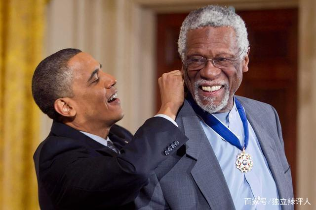
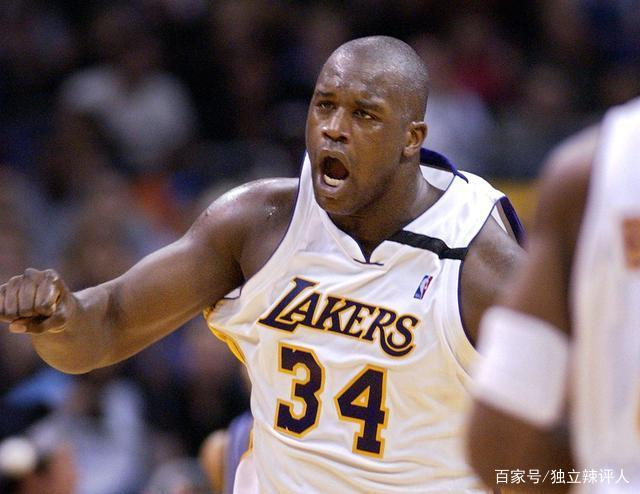

1896年，美国第一个篮球组织——全国篮球联盟（National Basketball League，简称NBL）成立，但当时篮球规则还不完善，组织机构也不健全，经过几个赛季后，该组织就名存实亡了。
1946年6月6日，由美国波士顿花园老板沃尔特·布朗发起，十一家冰球馆与体育馆（纽约尼克斯队、波士顿凯尔特人队、芝加哥牡鹿队、克利夫兰叛逆者队、底特律猎鹰队、费城勇士队、匹兹堡铁人队、普罗维登斯压路机队、圣路易斯轰炸队、多伦多哈士奇队和华盛顿国会队）的老板共同成立了全美篮球协会（Basketball Association of America，简称BAA）。
1949年8月3日，美国两大篮球组织BAA和NBL合并成立美国职业篮球联赛（National Basketball Association，简称NBA）。同时，NBA历史上出现了第一名真正意义上的超级巨星——乔治·麦肯，他身高2米10左右，动作灵活，在当时是最强的统治者，他揭开了湖人王朝第一章的序幕，在之后六年帮助湖人队五夺总冠军。在9年的职业篮球生涯中，麦肯共获得了7个NBA总冠军。
毫无疑问，无论怎么排，无论谁来排，按照什么标准排，老流氓迈克尔乔丹，都是排在十大球星第一位的！作为NBA历史上最具影响力球星，以一人之力把NBA推向全世界，两次三连冠，六个FMVP,当之无愧的NBA历史第一人！

NBA历史前十唯一现役球员，2003年出道即巅峰，至今已17年仍然能够拿到25.7分7.9篮板10.6次助攻的豪华数据，其中10.6次助攻位居联盟第一！在詹姆斯职业生涯结束之时，可能是NBA历史上唯一一位40000+10000+10000的球员。

指环王拉塞尔的时代虽然已然远离，虽然当时的篮球水平和争冠难度不高，但是拉塞尔能够赢得满手总冠军戒指，依然令人难以想象！至今指环王拉塞尔仍然发挥着余热，为每年的FMVP颁发以其名字命名的奖杯！
2020年，巨星坠落，小飞侠科比不幸飞机"失事离开人间，他特立独行的处事风格，潇洒飘逸的投篮姿势、争强好胜的篮球理念，坚韧不拔的曼巴精神无不影响和激励着一批又一批的篮球热血青年，至今NBA联盟有大批的科比门徒，愿科比在天堂也能享受篮球。R.I.P

魔术师约翰逊在其相对来说短短的11年职业生涯中，九次带领湖人队杀入nba总决赛，五次夺得总冠军，新秀赛季就带领湖人队夺得总冠军，荣膺FMVP，其华丽无比的球风，开启了湖人SHOWTIME时代，与大鸟伯德留下黑白双煞的佳话，再次将濒临倒闭的NBA开启复兴之路。

NBA历史上最装。BEE的球员，没有之一，特别是在三分大赛的那句你们都是争第二名的吗装的令人发指！在以黑人为主的NBA联盟，大鸟伯德能够三连MVP，排在第六实属实至名归！

以赛亚托马斯是整个NBA历史最被低估和忽视的球员，没有之一，众多周知，由于和NBA第一任篮球之神乔丹的不和，坏孩子军团的代表托马斯的历史地位没有被正确对待。虽然只有两个总冠军，那可是蹂躏篮球之神，终止魔术师三连的两冠，其冠军成色在整个NBA历史上数一数二！

劲爆的身体素质，夸张的扣篮表情，大鲨鱼奥尼尔绝对是NBA历史上最具破坏力的球员之一，连NBA联盟都为其修改篮球规则，整个NBA球队为了对付奥尼尔发明了砍鲨战术，是湖人再次复兴的最大功臣！
在即将出道之时，大批NBA球队为了得到邓肯用丧心病狂的方式摆烂，联盟的极个别的几个球队甚至在比输球场数谁更多。其稳如磐石的球风，喜怒不行于色的性格，为其赢得了石佛的称号！在马刺队的职业生涯可以说是NBA历史最强大前锋的最有利的竞争者。

超长待机！整个职业生涯，贾巴尔留下了一串的NBA记录，他是NBA首个打满20个赛季的球员，NBA历史总得分记录保持者（38387分），常规赛MVP最多得主，其一招鲜的天勾制霸NBA赛场多年，成为NBA历史上不朽的传奇！